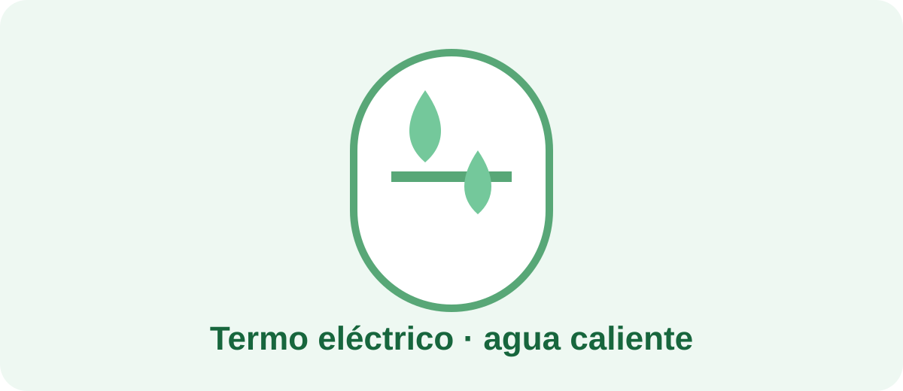

El consumo de un termo depende de la potencia de su resistencia, la cantidad de agua calentada, la temperatura y las pérdidas de calor del depósito.
Como aproximación inicial puedes utilizar: kWh = potencia en kW × horas de funcionamiento.
Por ejemplo, una resistencia de 1.500 W que permanece calentando durante 2 horas equivalentes en un día consumiría aproximadamente 3 kWh ese día. A 0,18 €/kWh serían 0,54 €.
No existe una respuesta universal. Depende de tus horarios, del aislamiento del depósito y de cuánto tiempo permanezca sin utilizarse. Lo más útil es comparar el consumo medido con diferentes hábitos.
El termo puede representar una parte relevante del consumo de una vivienda. Medirlo durante varios días te permite saber cuánto pesa realmente en tu factura.
Si el aparato utiliza una conexión compatible, un medidor puede ayudarte a registrar el consumo real.
No utilices un enchufe medidor si la instalación o la potencia del equipo no son compatibles.